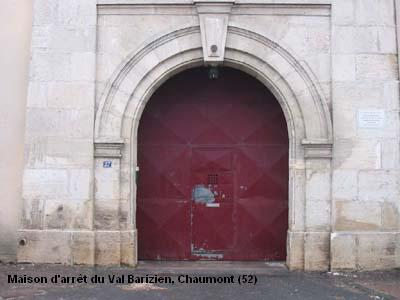
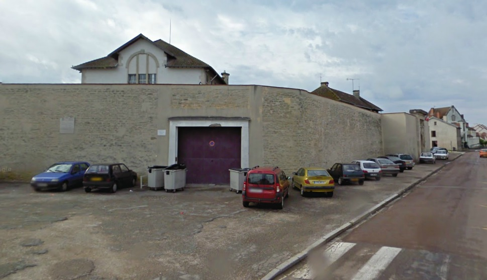

| Département | Images | Ville | Nom | Adresse | Période | Capacité | Histoire du lieu | Nombre d'exécutions |
| Haute-Marne (52) |   |
Chaumont | Prison Valbarizien | 27, rue du Val Barizien | En service depuis 1887 | 77 places (1962) 78 places (2015) |
Remplace l'ancienne prison, devenue musée d'Art et d'Histoire de la ville. | Quatre exécutions en 1896, 1921 et 1922 |
| Haute-Marne (52) | Langres | Maison d'arrêt et de correction | 10, rue de la Tournelle | 1774-1926 | Aucune exécution | |||
| Haute-Marne (52) | Wassy | Maison d'arrêt et de correction | -1902 | Aucune exécution | ||||
| Haute-Marne (52) | Wassy | Maison d'arrêt et de correction | Rue de Metz (Rue des Martyrs-de-la-Résistance) | 1902-1926 | Plans de l'architecte Naudin, sur un terrain acheté trois ans plus tôt à l'hospice. Voisine de la Justice de Paix. Le 27 janvier 1943, son gardien-chef, Marius Bocquenet, 47 ans, ancien gendarme, est arrêté et déporté à Sachsenhausen pour avoir écouté la BBC. Il mourra dans le camp le 15 juin 1943. La prison sera finalement démolie en 1990. | Aucune exécution |
{kind=link}
{kind=link}